Mêmes règles que le n°44, le lot 1 et le lot 2 que tu as validés : source PNG native, aucun agrandissement, retouche à la résolution de la source, vert ramené dans la famille du n°260, puis WebP animé 660 px (+ GIF de secours). Rien n'est intégré : aucun GIF livré remplacé, APK intact, 0 image générée.
Ces deux numéros partagent la même source et le même GIF livré (empreintes sha256 identiques) : les deux exports sont donc identiques, et c'est normal. Source native 798×1334 → export 193×660 (le GIF livré fait 129×440, 64 ko).
WebP animé 660 q90 — n°387 42 ko · 193×660 · 2 phases de 500 ms WebP animé 660 q90 — n°388 42 ko · fichier identique (même GIF livré) GIF de secours 120 ko · 2 phases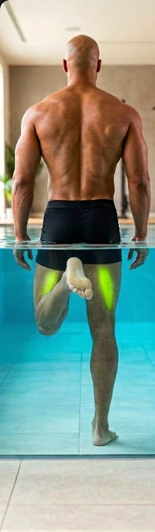
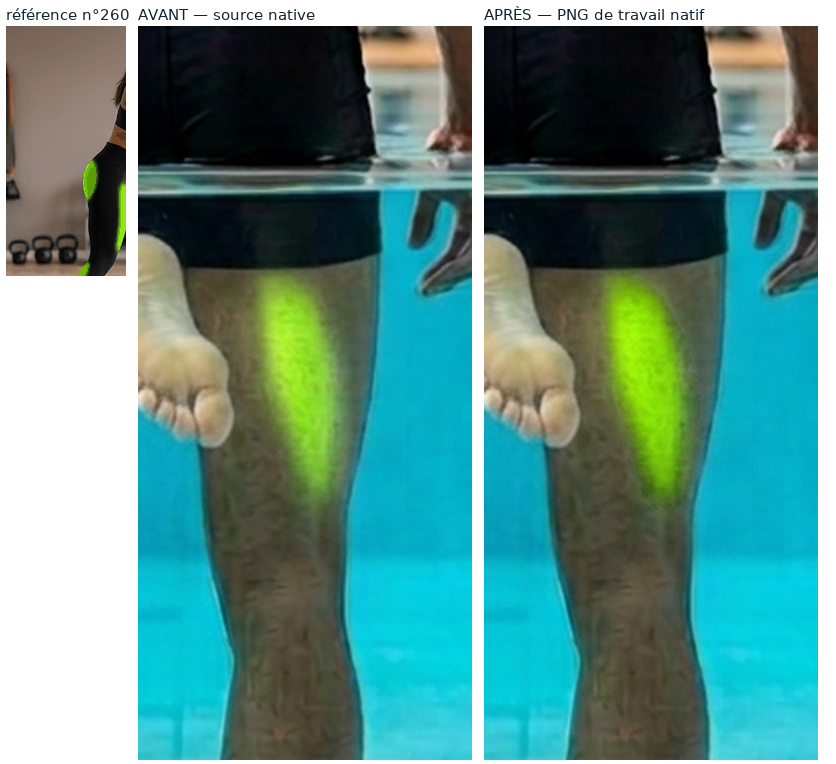
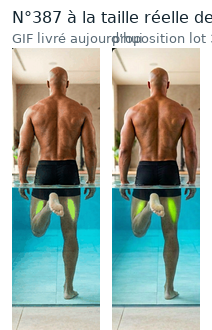
À vérifier en priorité : la zone verte est petite dans l'image (14 219 px sur les deux phases). Dis-moi si elle tombe bien sur l'arrière de la cuisse et pas sur le mollet ou le sol.
Source native 800×1334 → export 188×660 (GIF livré 125×440, 71 ko). C'est la zone verte la plus étendue du lot (15 590 px). La source était à 82,6°, ramenée à 86,3° comme le n°260.
WebP animé 660 q90 — n°264 39 ko · 188×660 · 2 phases GIF de secours 130 ko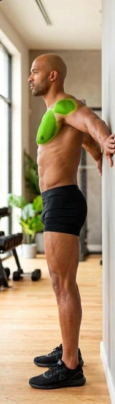
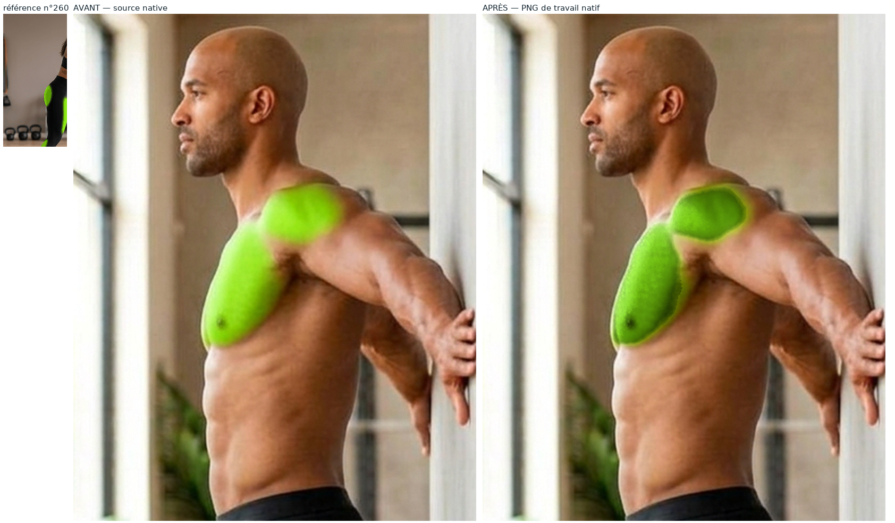
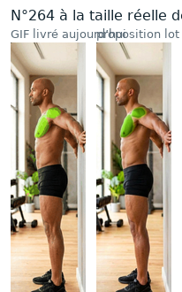
Planche classique 1376×768, deux cases → export 573×660 (GIF livré 382×440, 195 ko). C'est le numéro du lot dont le recalage sur le GIF livré est le plus sûr (erreur 4,15/255).
WebP animé 660 q90 — n°14 99 ko · 573×660 · 2 phases GIF de secours 397 ko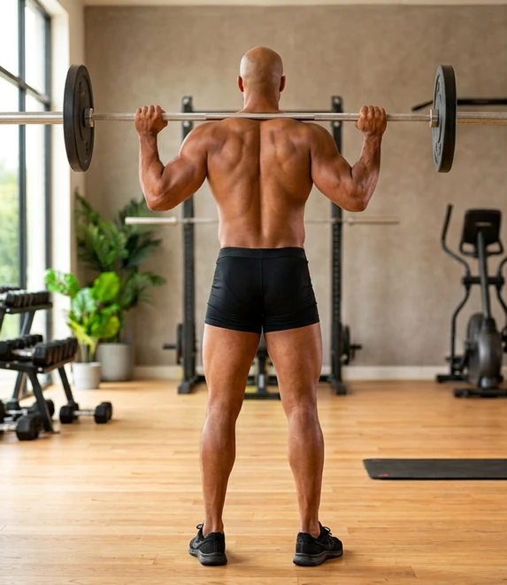
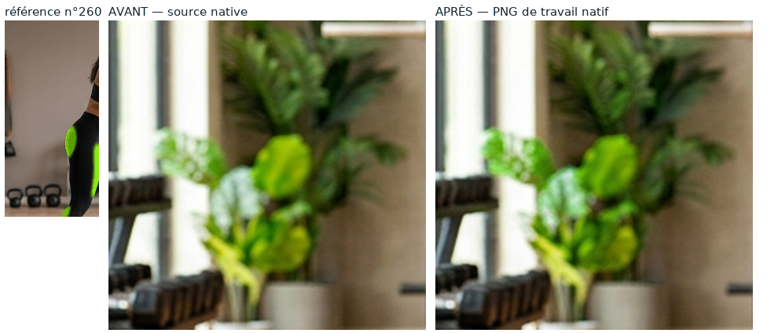
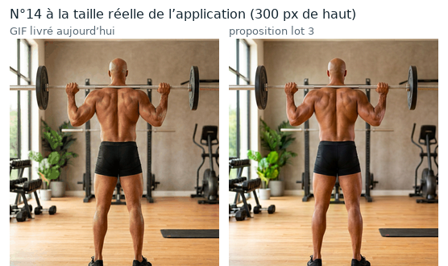
Deux points à trancher sur ce numéro : (1) la phase 2 reste plus terne que la référence (saturation 0,775 contre 0,914) parce que j'ai conservé l'ombrage entre les phases ; dis-moi si tu préfères les deux phases au même niveau. (2) la transition de contour de la phase 2 mesure 11,45 px, contre 8,5 px sur le lot 2 : le bord y est un peu plus doux.
Ces planches montrent ce que contient réellement le WebP et le GIF de repli (fichiers rouverts image par image), pas le PNG de travail.
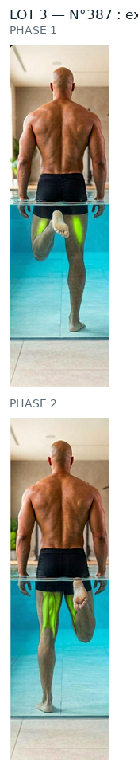
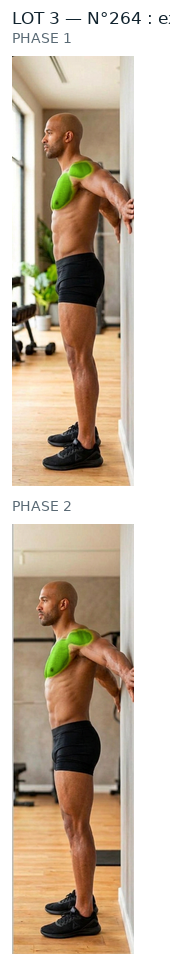
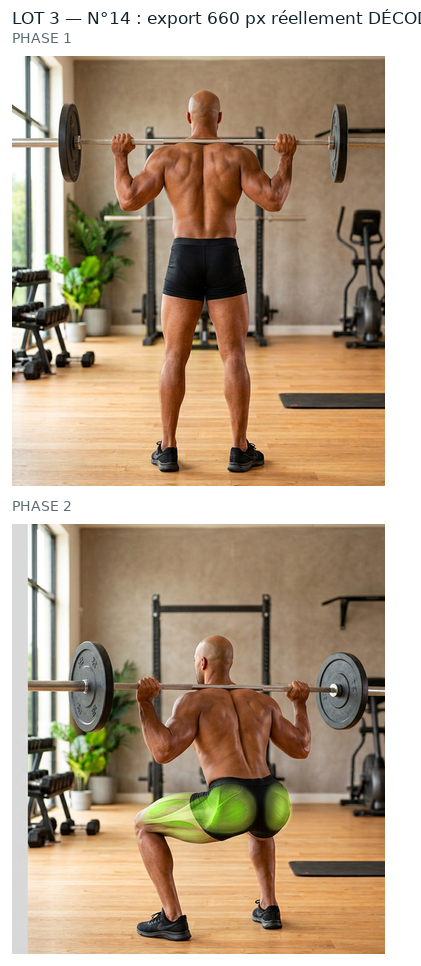
lot3/CONTROLES.json avec sa bbox d'origine. C'est traçable, mais c'est
moins sûr qu'un repérage à l'œil : le tri automatique muscle/décor a échoué
(recouvrement, teinte, peau, position : aucun critère ne sépare les cas), donc c'est ton œil
qui tranche.ROI, seuils, percentiles, poids, PSNR et garantie « aucun pixel modifié hors zone » :
evolution/media/refonte-photo/hd-2026-09-30/lot3/CONTROLES.json —
0 pixel modifié hors zone sur les 8 phases du lot.